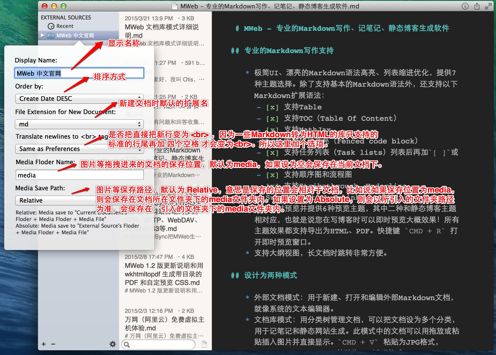
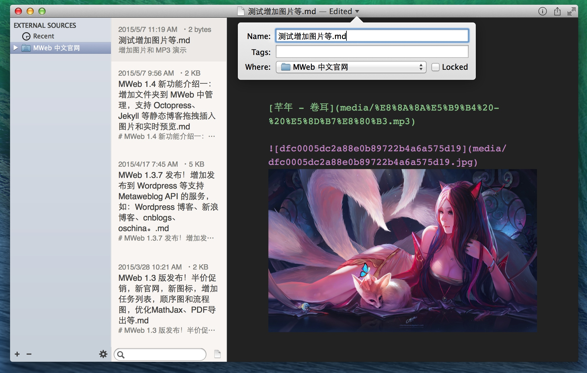
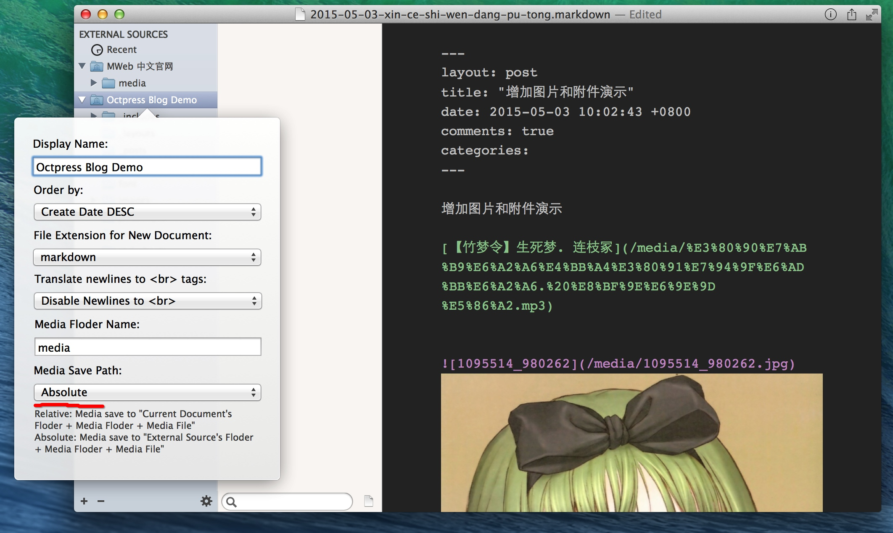
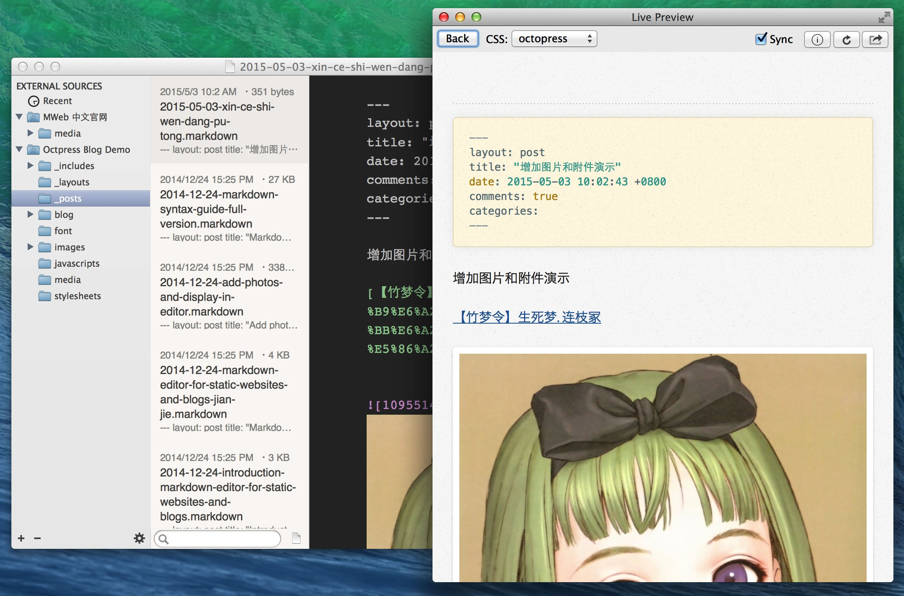
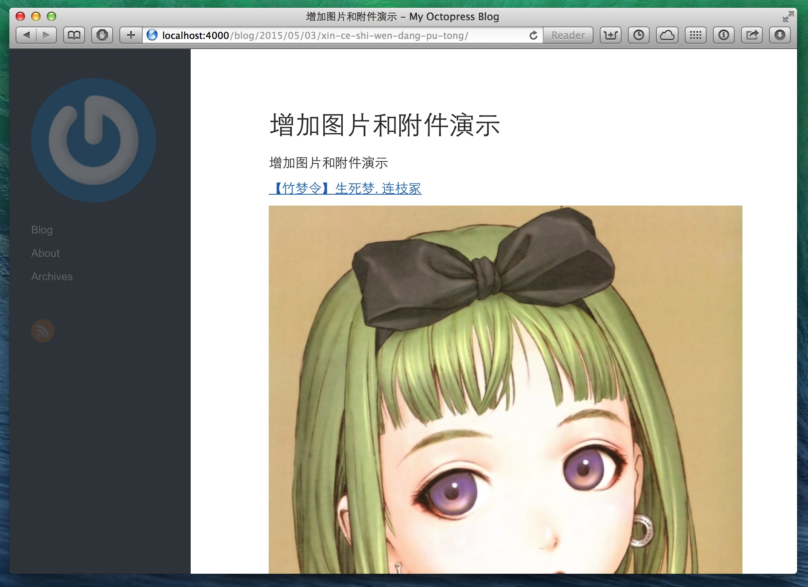

之前在 MWeb 中打开非文档库中的 Markdown 文档，如果文档中有引用到本机图片，是没办法在 MWeb 中显示出来和预览的。这是因为 Apple 规定在 Mac App Store（MAS） 上的软件，都不能对软件自己的沙箱之外的文档进行任何操作，连读取都不能，除非用户明确授权。而用户授权的方式是使用打开、保存对话框。比如说你用 MWeb 打开一个 Markdown 文档，那么 MWeb 就能得到读写这个文档的权限。再比如说你用 MWeb 导出为 HTML 功能，在保存为对话框中选择一个要导出到的文件夹，那么 MWeb 就能得到读写这个文件夹的权限。
正因为这个原因，所以，一般情况下，如果一个软件有 MAS 版，都建议用 MAS 版，特别是国内大厂的软件，即使功能上少了点。
这次 1.4 版新增可以引入文件夹到 MWeb 中管理的功能，就是为了解决用 MWeb 打开非文档库中的 Markdown 文档无法用拖拽和粘贴插入图片，预览时无法显示引用的本机图片的问题。然后 1.4 版还对 Octpress、Jekyll 等静态博客进行了优化。在用 MWeb 编辑 Octpress、Jekyll 的 Markdown 文档时，也可以在编辑器中拖拽或粘贴插入图片并显示在编辑器中和进行实时预览了。
特别说明的是：1.4 版的实时预览增加了同步滚动功能！然后我觉得目前同步滚动功能是相当好用了，所以在这里特别说明一下。
MWeb 引入文件夹功能介绍
为了方便使用引入文件夹功能，MWeb 的外部模式新增了一个快捷键：CMD + E。任何情况下按 CMD + E 即可打开外部模式，在外部模式中就可以看到所有引入的文件夹了。同样提示一下 MWeb 的文档库模式的快捷键是：CMD + L。如果你不喜欢用快捷键，也可以用菜单： View - Open External 打开外部模式。
点软件左下方的 + - Add External Source...，然后在对话框中选择要引入到 MWeb 的文件夹，再点 Choose 即可。还有更多的设置如下图。

引入后，在最左边那栏选择文件夹，中间那栏则会显示该文件夹下的 Markdown 文档。如下图显示，引入后的文档可以方便地拖拽插入图片和附件，下图是增加了一个 MP3 和一张图。然后需要说一下的是，点击软件的标题栏可以修改文档名称和为文档增加 Tags，如下图。

然后实时预览、导出为HTML/PDF、发布到 Wordpress 等文档库中可以用的一些功能在外部模式也是可以使用的。同样，发布到 Wordpress、新浪博客等支持 Metaweblog API 的服务时，文档中的图片也是会一起发布的。
对 Octpress、Jekyll 等静态博客优化介绍
如上边所写，MWeb 引入的文件夹的 Markdown 文档插入图片的保存位置设置有两个选择：Relative 和 Absolute。
Octpress、Jekyll 等静态博客因为可以自定像 http://域名/2015/3/the-blog-post/ 这样的网址，所以在增加图片时，都是用 /images/pic.jpg 这样的绝对路径。然后图片要放在 source/images 文件夹下。
正因为这个原因，引入 Octpress 等静态博客的文件夹到 MWeb 时，请引入 source 文件夹。引入后你可以修改 Display Name 来标识。最重要一点，Media Save Path 请选择 Absolute。
Octpress 的文档一般都在 _posts 这个资料夹下，在 MWeb 最左边那栏选择 _posts 文件夹，在中间那栏选择要编辑的文档即可。这时的文档已经是支持拖拽插入图片和实时预览了。然后无论你编辑 source 下的那个文档，你所插入的图片都会保存在 source 下的你在 Media Floder Name 中设置的文件夹下。
如果要新增文档，你可以用 MWeb 中的新增文档功能（点软件中间那栏搜寻框右边的新增按钮），也可以用 Octpress 等所带的命令行新增文档（推荐）。你用命令行新增后，MWeb 会在列表中自动显示你新增的文档。然后删除文档、新增文件夹等，也会自动更新显示的，总之 MWeb 能侦测到你引入的文件夹的内容的变化而自动更新显示。所以 MWeb 没有做 刷新 这个功能。
引入 Otcpress 的 source 文件夹的属性设置、新增附件、图片效果，如图：

在 MWeb 中实时预览，MWeb 会对 Otcpress Markdown 文档中的 Meta 设置转成代码，如图：

用 Octpress 的网站预览功能，在 Safari 中查看的效果，如图：

其他如 hexo、Farbox 等引入 MWeb 中进行管理我想也差不多，不再多介绍了。引入文件夹比用 MWeb 文档库模式好的地方是同步和协作都比较方便。然后说明一下 MWeb 1.4 版现在还没有提交到 MAS 的，我还要多测试几天才会提交。所以看到这篇文章的朋友，如果有什么的建议，可以跟我说，这样就可以及时在提交前改进了。
然后 1.4 版还对 MWeb 静态博客功能进行了增强，我也正在考虑介绍文章怎么写，初步计划是写两篇，一篇是介绍功能，一篇是再做一个生成 Apple 播客 RSS 的例子。最晚的话，明天应该会把文章发出来。